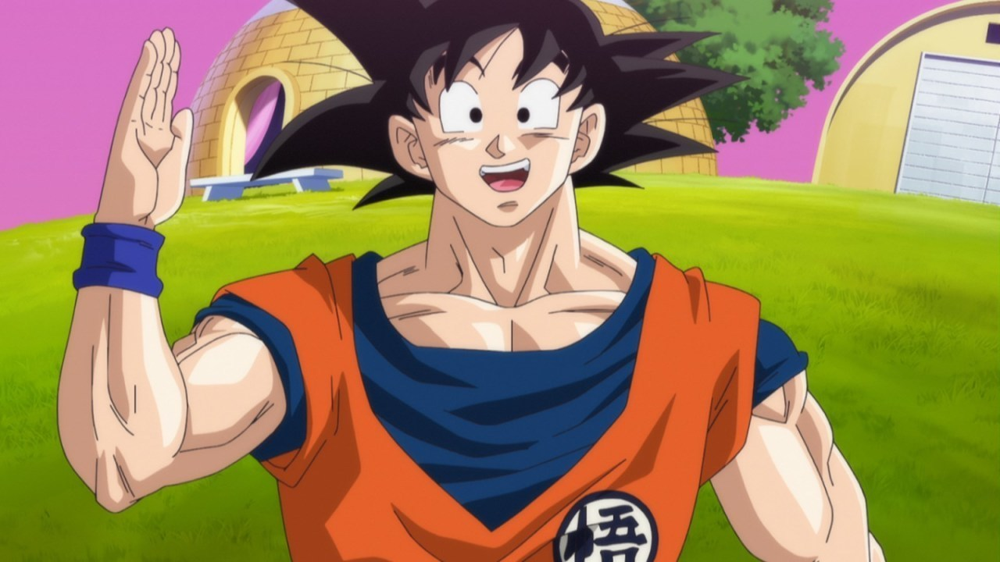
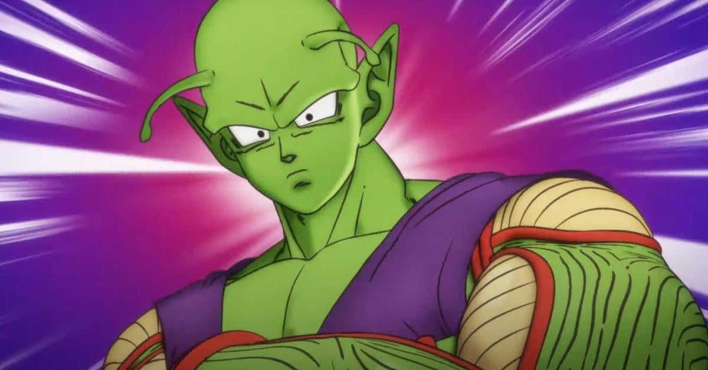
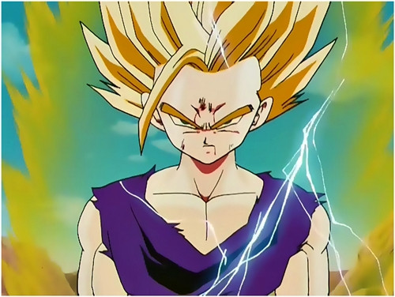
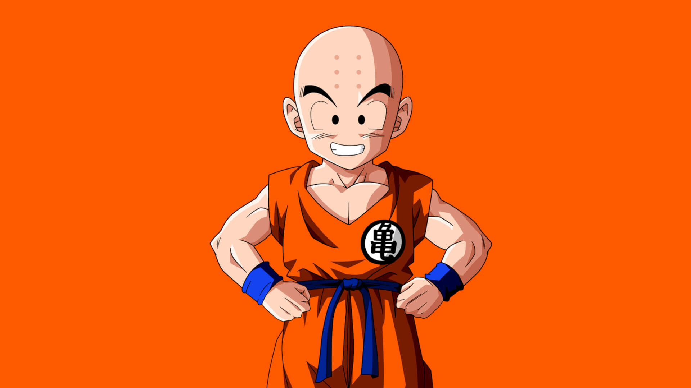
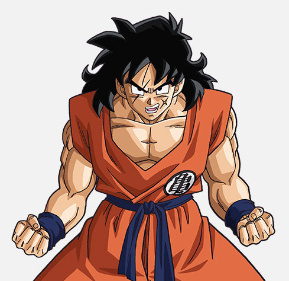
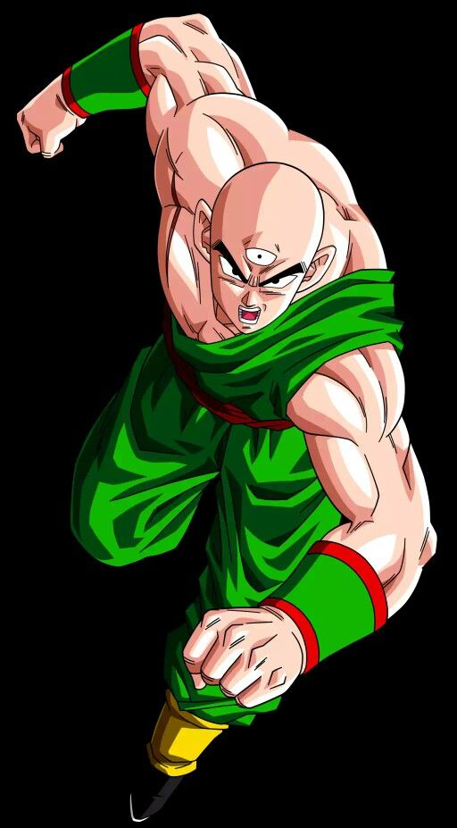
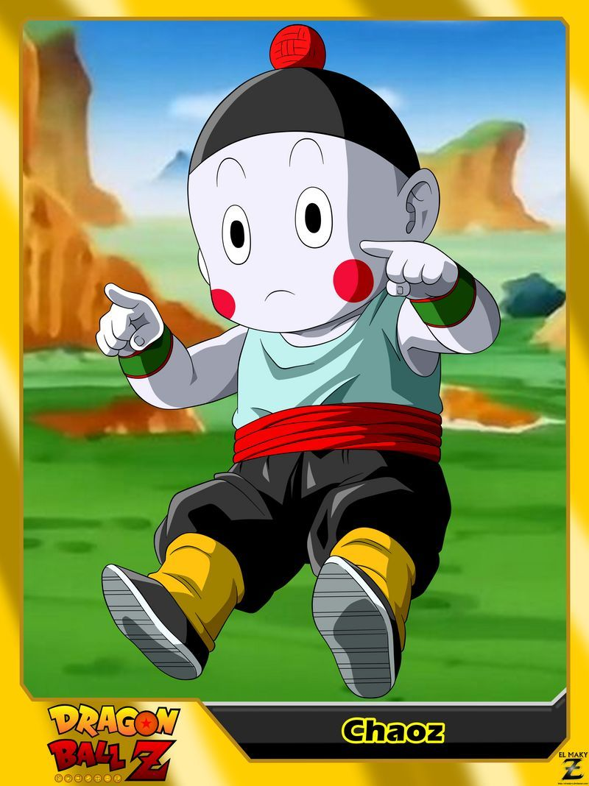
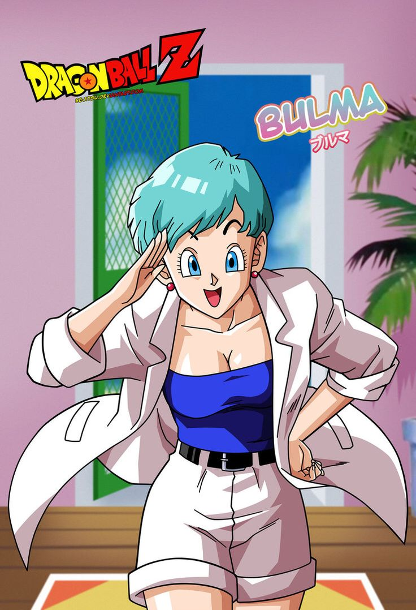
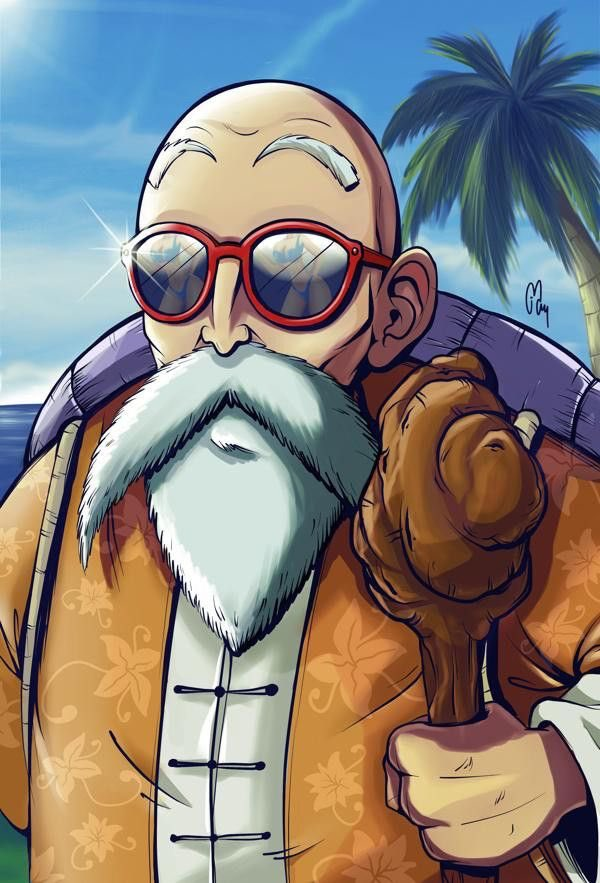
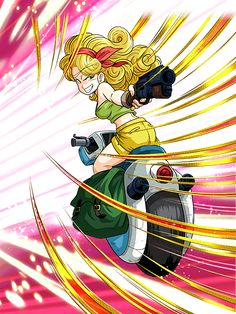

Introduction
Bienvenue sur Dragon Ball Fansite, votre source pour toutes les nouvelles, les épisodes et les personnages de la célèbre série animée Dragon Ball.
News
Dragon Ball : L’intégrale bientôt sur Netflix ? La plateforme répond. « On essaye à fond, avant même ton premier message ».
C’est sur cette seule phrase que vont désormais se fonder tous les espoirs d’une génération.
D’accord, on exagère un peu, toujours est-il que la plateforme de vidéo à la demande Netflix vient une nouvelle fois de confirmer son vif intérêt sur l’acquisition des droits de diffusion de la série Dragon Ball en France.
On précise Netflix France, parce que l’intégralité de Dragon Ball était déjà sorti sur Netflix Japon en 2017.
Tous les épisodes de Dragon Ball et de DBZ étaient disponibles gratuitement et légalement, mais ils ont été retirés depuis.En réalité, la plateforme française est au taquet depuis très longtemps, puisqu’en septembre 2014, donc bien avant l’arrivée de Dragon Ball Super, on avait déjà 3 films Dragon Ball sur Netflix France.
Ils ont été supprimés depuis, puisque les droits de diffusion sont temporaires, mais c’est tout de même remarquable.
Ils s’agissaient des films Dragon Ball Z : Fusions, L’Attaque du Dragon, et Attaque Super Warriors .
En novembre 2017, nouveau tour de magie de Netflix, qui proposait cette fois les films DBZ Battle of Gods et La Résurrection de F, soulignant une nouvelle fois son intérêt pour la franchise.Plus tôt dans la semaine, le compte officiel de Netflix France a répondu à l’interpellation de Yass.
Ce dernier demandait à la plateforme de mettre à disposition les épisodes de Dragon Ball en vidéo à la demande. Netflix a répondu qu’ils essayent depuis un bon moment, et comme nous l’avons vu en début d’article, on ne doute pas qu’ils ont déjà tenté le coup.
On ne doute pas non plus que les droits de diffusion doivent être exorbitants, tout comme ceux de One Piece. Pour l’heure, on a déjà l’intégrale de Naruto, ainsi que d’autres chefs d’œuvre de l’animation japonaise, et c’est plutôt bon signe pour la suite.
Personnages
Découvrez les personnages emblématiques de Dragon Ball, tels que Goku, Vegeta et Piccolo.
Goku

Goku est le héros principal de la série Dragon Ball. Il est doté d'une force surhumaine et est capable d'utiliser des techniques telles que le Kamehameha. Il est déterminé à devenir le plus fort et à protéger les êtres qu'il aime.
Vegeta

Vegeta est un personnage de la série Dragon Ball, initialement un ennemi de Goku. Il est prince des Sayiens et est connu pour son arrogance et sa soif de pouvoir. Au fil du temps, il devient un allié de Goku et travaille dur pour devenir plus fort. Il est connu pour ses techniques telles que la Garric Gun et le Big Bang Attack.
Piccolo

Piccolo est un personnage de la série Dragon Ball. Il est la reincarnation de l'antagoniste principal de la série, Piccolo Daimao, mais au fil du temps, il devient un allié de Goku et de ses amis. Il est connu pour sa force physique et sa capacité à utiliser des techniques telles que le Makankosappo.
Gohan

Gohan est un personnage de la série Dragon Ball. C'est le fils de Goku et Chichi, et l'un des personnages les plus importants de la série. Il est connu pour sa transformation en "Super Saiyan" et pour son incroyable potentiel de combat. Au fil des années, il a également développé ses compétences en matière d'intelligence et de stratégie.
Krillin

Krillin est un personnage de la série Dragon Ball. C'est un ami proche de Goku et un membre fidèle de l'équipe Z. Bien qu'il ne soit pas aussi puissant que certains des autres personnages, il est connu pour sa stratégie et son intelligence, ainsi que pour sa ténacité et sa détermination lorsqu'il se bat. Il a joué un rôle clé dans de nombreuses aventures et a été un allié fidèle à toutes les étapes du chemin.
Yamcha

Yamcha est un guerrier errant qui a commencé en tant que bandit mais est devenu un allié fidèle de Goku et de ses amis. Il est connu pour ses compétences en arts martiaux et pour ses talents de batteur de baseball. Malgré son passé criminel, Yamcha est un personnage aimable et loyal, toujours prêt à aider ses amis en difficulté. Il est également connu pour ses peurs des femmes et pour son incapacité à faire face à sa peur, bien qu'il ait finalement surmonté cette peur avec l'aide de Bulma. En général, Yamcha est un personnage important dans la série Dragon Ball et est aimé par les fans pour son évolution et son dévouement envers ses amis.
Tenshinhan

Tenshinhan est un guerrier talentueux originaire de la planète Terre. Il est connu pour ses trois yeux et ses compétences en arts martiaux. Il est devenu un ennemi de Goku et de ses amis lors de la 22ème Tenkaichi Budokai, mais plus tard, il est devenu un allié fidèle et un membre important de l'équipe lors de la lutte contre le Démon King Piccolo et les androïdes. Tenshinhan est souvent considéré comme un des plus grands guerriers de la série Dragon Ball et est apprécié pour son courage et sa loyauté envers ses amis.
Chaozu

Chaozu est un petit personnage avec une apparence semblable à celle d'un nain de jardin. Il est le meilleur ami de Tenshinhan et est souvent vu à ses côtés. Chaozu a le pouvoir de contrôler la télékinésie, ce qui lui permet de faire bouger les objets sans les toucher. Il est également capable de projeter des attaques à distance en utilisant ses pouvoirs psychiques. Bien que petit et sans apparence très menaçante, Chaozu est un combattant déterminé et loyale, prêt à tout pour aider ses amis.
Bulma

Bulma est l'une des personnages féminins les plus importants de la série Dragon Ball. C'est une jeune femme intelligente et déterminée, dotée d'un grand esprit scientifique. Elle est la fille du DR Brief de Capsule Corporation, l'une des entreprises les plus puissantes du monde. Bulma rencontre Goku pour la première fois dans le cadre de sa quête pour trouver les Dragon Balls, et elle devient rapidement une alliée fidèle et un membre clé de l'équipe. Elle est connue pour sa personnalité forte et sa capacité à résoudre les problèmes complexes, ainsi que pour son style de vie décontracté et son sens de l'humour.
Tortue Génial

Tortue Géniale est un personnage important de la série Dragon Ball. C'est un vieil homme sage et expérimenté qui est souvent considéré comme le mentor spirituel de Goku et de ses amis. Il possède une grande connaissance du monde et des arts martiaux, et il est souvent appelé à fournir des conseils et des stratégies pour aider les combattants à surmonter les défis qui se dressent devant eux. Tortue Géniale est un personnage profondément aimé et respecté par ses amis, en raison de son savoir, de sa sagesse et de son engagement envers le bien. Il est considéré comme un maître de l'entraînement et de la discipline, et il est souvent vu comme un modèle pour les jeunes combattants en herbe.
Lunch

Lunch est un personnage qui apparaît essentiellement dans la saga Dragon Ball. C'est une criminelle recherchée qui devient une alliée plus ou moins fidèle de Son Gokû et ses amis.